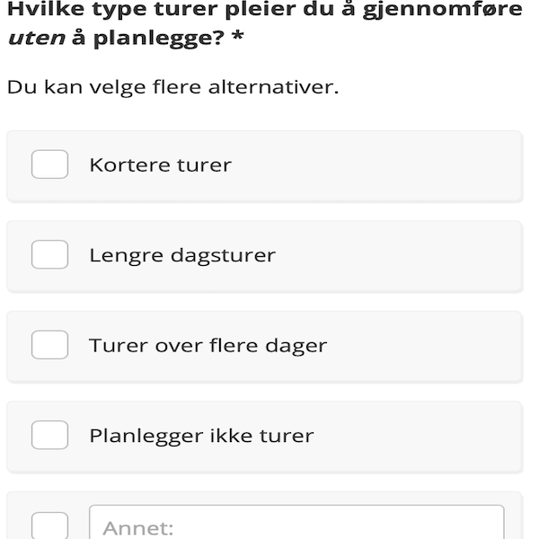
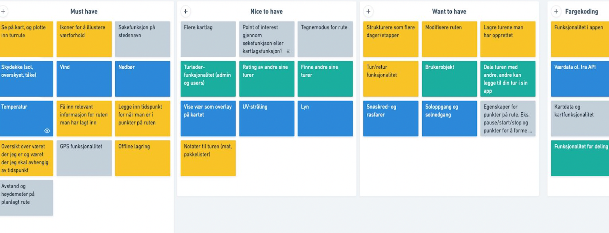
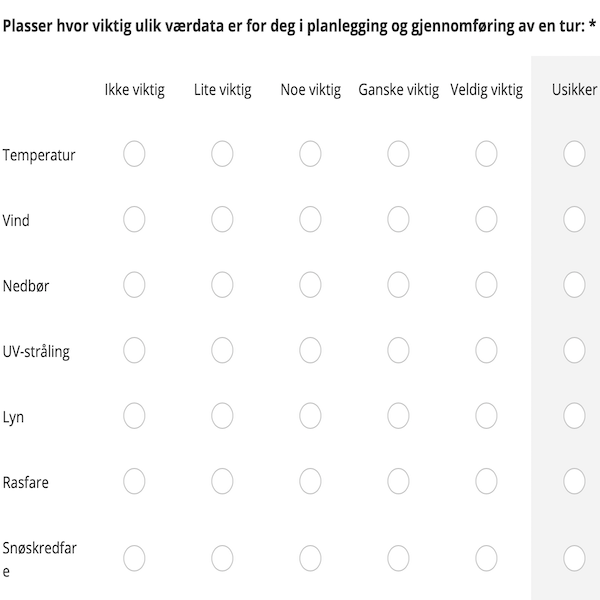
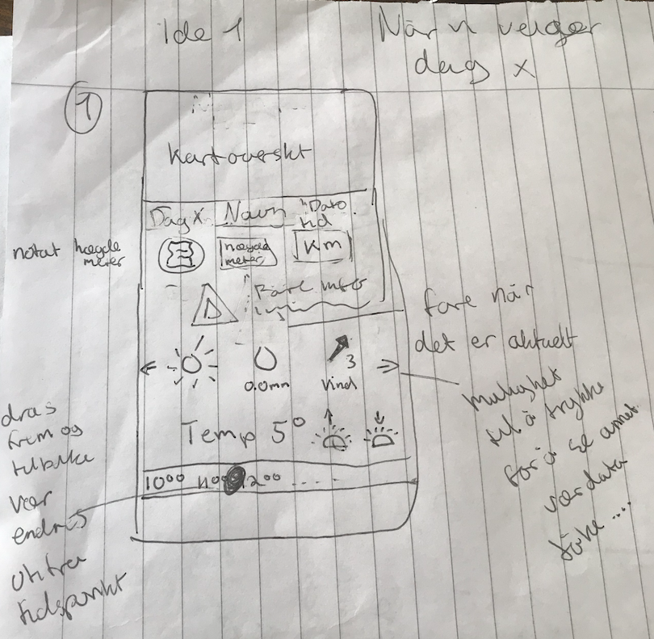
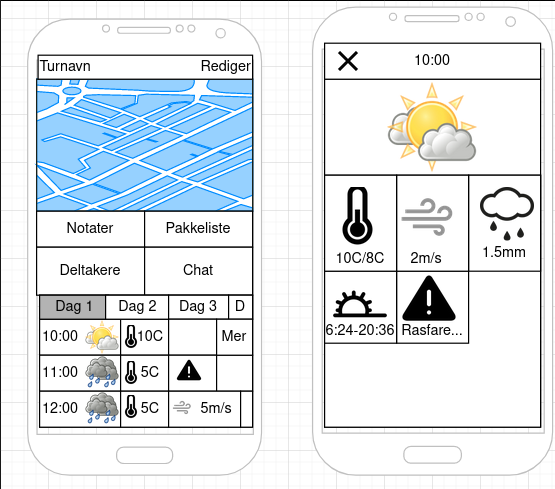
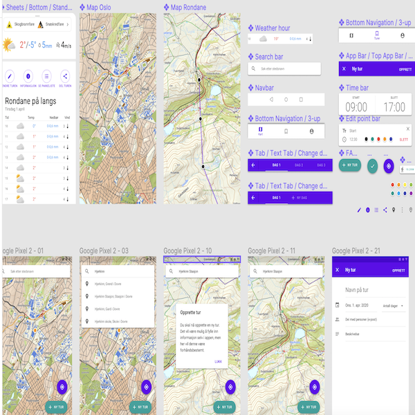
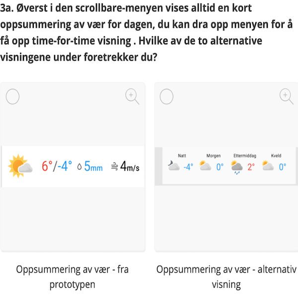
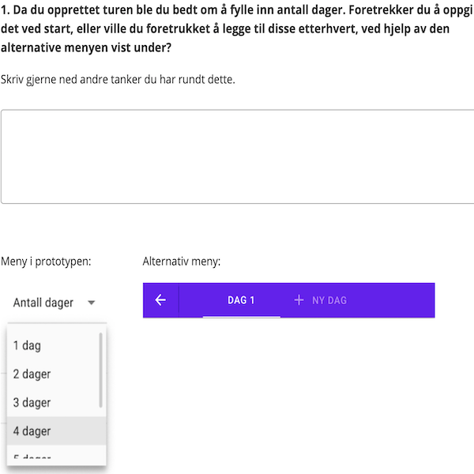
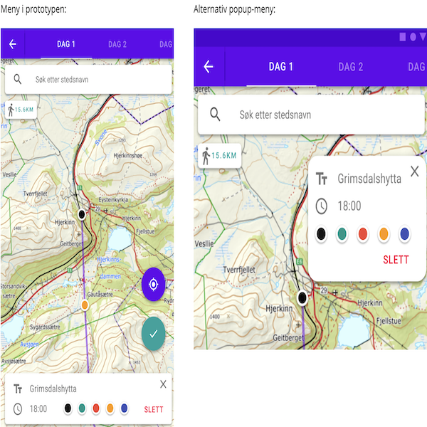

IN2000: Software Engineering med prosjektarbeid
Om prosjektet
Et tverrfaglig skoleprosjekt hvor vi som en gruppe, sammensatt av både utviklere og designere, utviklet en android app som var knyttet til værdata fra MET API.
Vår brukergruppe var turgåere. I tillegg til app, skrev vi en full rapport om prosessen
Jeg hadde hovedansvaret for brukerene; gjennomføring av datainnsamlinger og brukertester, analyse, evaluering og
brukertester.
Prosessen
Som innledende datainnsamling gjennomførte vi et videointervju, for senere å kunne få noen ideer
på interresante ting å undersøke og mulige behov.
Vi fikk stilt noen konkrete og fikk gode samtaler som ga oss inspirasjon til en spørreundersøkelse
En spørreundersøkelse er en passende metode siden vi ønsket å nå ut til så mange som mulig i målgruppen.
Vi fikk mer kvantitativ data feks. “hvor ofte går du på tur?” som la grunnlaget for ideer og prototyper for en tur app.
I gruppen lagde vi lavoppløselige prototyper, før vi videre lagte prototyper i figma.
For testing av prototype benyttet vi oss av Figma slik at brukerene selv kunne interagere med appen.
I tillegg brukte vi en spørreundersøkelse med spørsmål om designvalg fra prototypen.
Siden vi ikke fikk testet fysisk med brukerene var vi ekstra nøye på gode og
forståelige beskrivelser om hva som skal gjøres og gjennomførte derfor pilottester.
Vi lærte og reviderte brukertester før vi sendte den ut til brukerene.
Disse type brukertestene fungerte godt for å tilegne seg mye data.









Ferdig produkt
Resultatet ble til slutt en gjennomarbeidet tur app hvor brukerene kunne selv opprette en tur, legge til punkter
på et kart over hvor de ville gå.
Ved opprettet tur kan bruker se vær og farevarsel i turområdet, samt muligheten til å dele turen med andre eller
invitere andre brukere til egen tur.
Vår app var også 1 av 5 vinnere av prisen beste app som beviser vårt harde arbeid.
Hva har jeg lært?
Jeg lærte masse om hvordan man best kan jobbe i tverrfaglig teams sammen og hvordan vi kan
bruke og få nytte av smidig utviklingsmetoder for best mulig sammarbeid.
For lite mulighet for å møtes fysisk på grunn av pandemien så ble jeg også godt kjent med
verktøyer som Notion, Slack og Zoom, som gode sammarbeids verktøy.
Dette gjorde sammarbeidet lettere og arbeidet mer effektivt
I tillegg har jeg lært litt Figma og android studio.